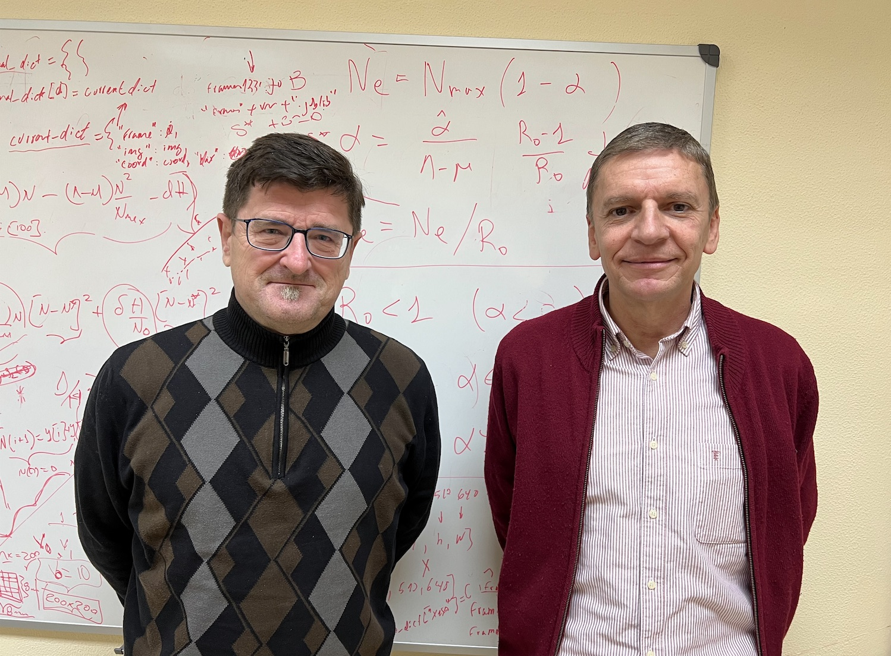
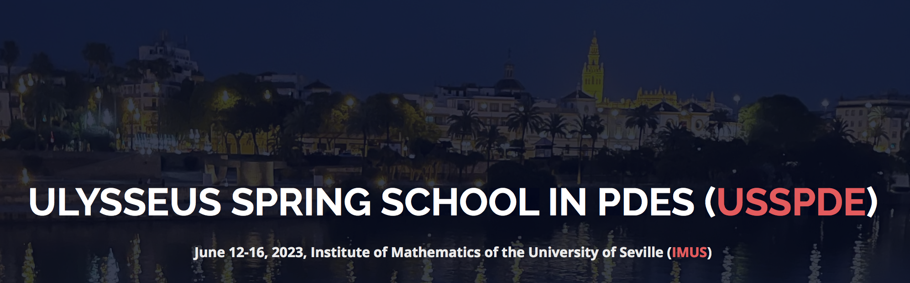
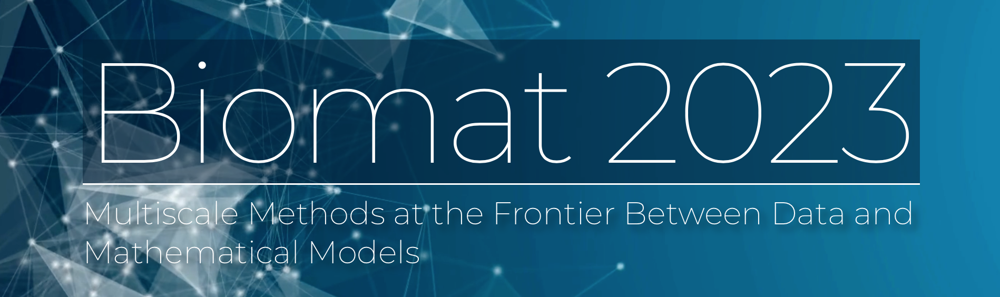
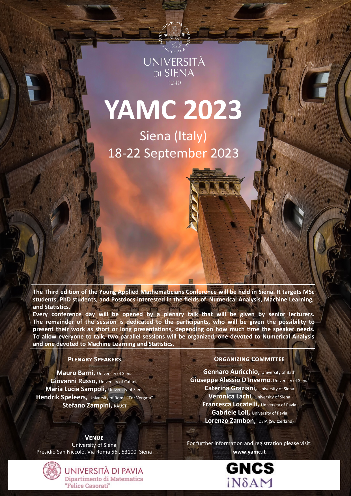
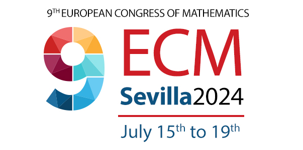

| Boletín electrónico de la SEMA – Número 32, mayo 2023 | |
| ISSN 2659-4129 | |
| © | Sociedad Española de Matemática Aplicada – SEMA |
| © | De los autores |
| https://www.sema.org.es/ |
Diseño de la portada: FOG.
Ilustración de la portada: Sección del interior de un nautilo, destacando la espiral logarítmica característica de esta especie (imagen tomada en L’Aquàrium de Barcelona).
Editorial Palabras del presidente
Estimados socios, este nuevo número del Boletín electrónico de la SEMA está conformado por muy buenas noticias de reconocimientos a socios y amigos, así como por muchos anuncios de celebración de eventos científicos, una vez recuperada la normalidad tras la pandemia causada por la covid-19.
Los nombres propios de estas buenas noticias son José Antonio Carrillo de la Plata, Medalla Echegaray 2022 por la Real Academia de Ciencias Exactas, Físicas y Naturales; María Elena Vázquez Cendón, premio Josefa Wonenburger 2022 de la Xunta de Galicia; Juan Ignacio Montijano y Luis Rández, que han recibido la distinción «Honorary Fellowship» de la European Society of Computational Methods in Sciences and Engineering; Alejandro Pastor, seleccionado por la SEMA a los premios ECCOMAS por las dos mejores tesis en 2022 sobre métodos computacionales en ciencias aplicadas e ingeniería; Francisco Marcellán Español, en este ocasión, por un doble motivo: su ingreso en la Real Academia Galega de Ciencias, y su nombramiento como miembro de la junta directiva de la Confederación de Sociedades Científicas de España; Luis Caffarelli, galardonado con el premio Abel 2022 otorgado por la Academia Noruega de Ciencias y Letras. Por último, Xavier Fernández-Real Girona, Premio SEMA «Antonio Valle» al Joven Investigador 2023. Desde estas líneas, y en nombre de la SEMA, queremos transmitir nuestras felicitaciones a cada uno de ellos.
Nuestra enhorabuena también va dirigida a los responsables del máster en Matemática Industrial impartido de forma conjunta por las universidades de Santiago de Compostela, Vigo, Coruña, la Complutense de Madrid y la Politécnica de Madrid, por haber sido reconocido dicho máster por la Xunta de Galicia con el sello de Máster de Excelencia.
La sección dedicada a las noticias también incluye, entre otros temas, una breve reseña sobre la reciente celebración del Workshop Control and Related Fields, que tuvo lugar en las instalaciones del Instituto de Matemáticas de la Universidad de Sevilla del 27 al 29 de marzo de 2023.
Las próximas semanas y meses están plagadas de celebraciones de diversos encuentros científicos. Algunos de ellos han sido anunciados en el presente Boletín. En particular, podemos encontrar la XX Escuela Jacques-Louis Lions Hispano Francesa sobre Simulación Numérica en Física e Ingeniería, que se celebrará en Universitat Politècnica de Catalunya en Barcelona del 3 al 7 de julio de 2023.
Y también se anuncia la celebración de la novena edición del Congreso Europeo de Matemáticas que tendrá lugar en Sevilla del 15 al 19 de julio de 2024. Este evento está apoyado por diversas sociedades científicas, entre ellas, la SEMA.
Como es habitual, deseamos que estos contenidos sean del interés de los socios de la SEMA.
Saludos cordiales,
Francisco Ortegón Gallego
José Rafael Rodríguez Galván
Puerto Real (Cádiz), 18 de mayo de 2023
Estimados colegas.
Aprovecho la ocasión que me ofrece la publicación de otro número de nuestro Boletín para comentaros algunas noticias relevantes que se han producido en el entorno de nuestra Sociedad en los últimos meses.
En primer lugar, destaco las buenas noticias que tienen nombre propio: José Antonio Carrillo de la Plata, Medalla Echegaray 2022 por la Real Academia de Ciencias Exactas, Físicas y Naturales, Juan Ignacio Montijano y Luis Rández, que han recibido la distinción «Honorary Fellowship» de la European Society of Computational Methods in Sciences and Engineering; María Elena Vázquez Cendón, premio Josefa Wonenburger 2022 de la Xunta de Galicia y Francisco Marcellán Español por su ingreso en la Real Academia Galega de Ciencias y su nombramiento como miembro de la junta directiva de la COSCE (Confederación de Sociedades Científicas de España), mi más sincera enhorabuena a todos ellos.
Mi felicitación al profesor Luis Caffarelli, primer matemático hispanoamericano que gana el premio Abel 2022 otorgado por la Academia Noruega de Ciencias y Letras, y que es sin duda uno de los matemáticos más influyentes dentro de las EDP y sus aplicaciones en España.
También felicito a los responsables del máster en Matemática Industrial impartido de forma conjunta por las universidades de Santiago de Compostela, Vigo, Coruña, la Complutense de Madrid y la Politécnica de Madrid, por su reciente reconocimiento por la Xunta de Galicia con el sello de Excelencia.
Por último, felicito a dos jóvenes promesas de nuestra Sociedad: Alejandro Pastor, seleccionado por la SEMA a los premios ECCOMAS por las dos mejores tesis en 2022 sobre métodos computacionales en ciencias aplicadas e ingeniería, y a Xavier Fernández-Real Girona recientemente galardonado con el Premio SEMA «Antonio Valle» al joven investigador 2023.
Como sabéis, El Ministerio de Universidades publicó en el pasado mes de abril dos borradores del Proyecto de Real Decreto por el que se establecen los ámbitos de conocimiento a efectos de la adscripción de los puestos de trabajo del profesorado universitario y Proyecto de Real Decreto por el que se regula la organización de los Departamentos universitarios. Estos borradores han generado mucho debate y controversia, y desde la SEMA presentamos una alegación a los mismos, esperando que el Ministerio reflexione sobre ambos Reales Decretos y evite añadir complejidad a la actual organización departamental de nuestras universidades, así como a nuestras carreras profesionales.
También estamos atentos a la discusión abierta sobre la evaluación de la carrera científica y esperamos que en el marco del CEMAT podamos llegar a un punto de encuentro entre todos los agentes implicados y elaborar un documento conjunto.
También han sido numerosos los eventos que han solicitado el patrocinio de la SEMA, algunos de ellos ya se han celebrado y otros se celebrarán en los próximos meses. En particular en este Boletín tenemos información de tres de ellos: ILAS2023, la actividad de divulgación en la Olimpiada de la ESO en Gijón y la Ulysseus Spring School in PDEs.
Por último os recuerdo que la XX Escuela Jacques-Louis Lions Hispano Francesa sobre Simulación Numérica en Física e Ingeniería, se celebrará en la Universitat Politècnica de Catalunya en Barcelona del 3 al 7 de julio de 2023. Durante su celebración tendrá lugar nuestra asamblea general, y la entrega habitual de galardones correspondientes al premio SEMA «Antonio Valle» al joven investigador 2023, el mejor artículo publicado en el SEMA Journal 2022 y a la tesis seleccionada por la SEMA para los premios ECCOMAS.
Un cordial saludo.
| Manuel Jesús Castro Díaz |
| Presidente de la SEMA |
| Málaga, 23 de mayo de 2023 |
_____________________________________
Nos congratulamos de que nuestro socio José Antonio Carrillo de la Plata ha sido galardonado con la medalla Echegaray 2022 por la Real Academia de Ciencias Exactas, Físicas y Naturales (RAC).
La Medalla Echegaray es el galardón científico más alto concedido por la Real Academia de Ciencias. Fue instituido a instancias de D. Santiago Ramón y Cajal en 1905, tras la concesión del Premio Nobel a D. José Echegaray. Desde la RAC, se reconoce una eminente trayectoria investigadora o una contribución científica de especial relevancia.
La concesión ha sido acordada en la sesión plenaria de la Corporación, celebrada el pasado mes de diciembre. Así la institución otorga a José Antonio Carrillo este reconocimiento, que adjudica cada dos años y es el galardón científico más antiguo reconocido en España.
En la propuesta de concesión, se destaca la calidad de la obra científica del Profesor Carrillo en matemática pura, que abarca desde las ecuaciones en derivadas parciales y campos afines, hasta diversas ramas de la ciencia aplicada. Sus investigaciones le han llevado a la obtención de diversos premios de relieve. La concesión de esta medalla responde a que José Antonio Carrillo es ya una referencia mundial en sus campos de estudio, con gran presencia en eventos, congresos, como el International Council for Industrial and Applied Mathematics (ICIAM) 2023, de ámbito mundial, y en instituciones europeas (European Mathemathics Society, European Academy of Sciences, Section Mathematics).
José Antonio Carrillo de la Plata fue nombrado recientemente Académico Extranjero de la RAC. Es doctor por la Universidad de Granada desde 1996 y desarrolla su carrera en el campo de las ecuaciones diferenciales de la física, en particular, en las ecuaciones de difusión no lineal, las ecuaciones cinéticas y el cálculo de variaciones. Destaca su notable dominio de técnicas novedosas y delicadas del análisis, motivadas en la física y las probabilidades. Desde 2004, ha sido sucesivamente profesor ICREA en Barcelona y desde 2012 es profesor del Imperial College de Londres. En los últimos años, sus contribuciones han sido fundamentales en ámbitos como la biología matemática, en sus vertientes teórica y computacional. Estos trabajos y su creciente renombre internacional, así como el extenso magisterio doctoral, le han promovido a la cátedra del Mathematical Institute de la Universidad de Oxford en Reino Unido, en 2020.
Desde estas líneas, felicitamos a José Antonio por tan alto reconocimiento a su labor científica.
_____________________________________ ◇◇◇_____________________
_____________________________________
La doctora de Ciencias Matemáticas y decana de la Facultad de Matemáticas en la Universidade de Santiago de Compostela, María Elena Vázquez Cendón, ha recibido el premio María Josefa Wonenburguer de 2022.
Se trata de una decisión que ha comunicado la Xunta de Galicia en el último pleno de la Unidade Muller e Ciencia de 2022, donde han tenido en cuenta la carrera de investigación y divulgación de la matemática.
El galardón, otorgado anualmente desde el año 2007, fue creado por la Xunta para distinguir a las mujeres de Galicia con trayectorias en los ámbitos de la ciencia y la tecnología, y pretende visibilizar y hacer llegar a la sociedad las contribuciones hechas por las mujeres gallegas a la ciencia y la tecnología.
Asimismo, cuenta con el compromiso del Gobierno gallego desde la Consellería de Promoción de Emprego e Igualdade y lleva el nombre de la investigadora y matemática gallega pionera y referente internacional.
La Xunta de Galicia ha alabado en esta línea la carrera de la doctora Vázquez Cendón, por sus contribuciones en el estudio de las leyes de balance hiperbólicas y por su compromiso con la divulgación, con su presencia al frente del Proyecto de Estímulo do Talento Matemático (Estalmat-Galicia) desde el año 2021.
El premio fue otorgado en un evento que tuvo lugar el pasado martes día 20 de diciembre en Santiago de Compostela.
¡Felicidades, Elena!
_____________________________________ ◇◇◇_____________________
_____________________________________

Nos es grato comunicaros que Juan Ignacio Montijano y Luis Rández han recibido la distinción «Honorary Fellowship» de la European Society of Computational Methods in Sciences and Engineering (ESCMSE).
La ESCMSE es una organización sin ánimo de lucro, cuyos principales objetivos son la construcción, el desarrollo y el análisis de métodos computaciones, numéricos y matemáticos y su aplicación en las Ciencias y la Ingeniería (para más información puede consultarse ESCMSE–European Society of Computational Methods in Sciences and Engineering).
Juan Ignacio Montijano y Luis Rández son catedráticos de la Universidad de Zaragoza y socios de la SEMA. Ambos tuvieron un papel muy relevante en la organización del CEDYA/CMA 2022. Además, Juan Ignacio fue el presidente de nuestra Sociedad durante el periodo 2004-2006.
¡Felicidades, Juan Ignacio y Luis!
Se puede encontrar más información en la noticia publicada por la Universidad de Zaragoza: Los matemáticos Juan Ignacio Montijano y Luis Rández, elegidos «Honorary Fellowship» de la European Society of Computational Methods in Sciences and Engineering | Universidad de Zaragoza (unizar.es).
_____________________________________ ◇◇◇_____________________
_____________________________________
La tesis seleccionada por la SEMA para optar a los ECCOMAS Awards for the Two Best PhD Theses in 2022 on Computational Methods in Applied Sciences and Engineering ha sido la defendida por el Dr. Alejandro Pastor Rodríguez titulada «Advanced observation correlation and orbit determination methods for the build-up and maintenance of a catalogue of space objects». La tesis, defendida en la Universidad Carlos III de Madrid y dirigida por los profesores Diego Escobar Antón y Manuel Sanjurjo Rivo, obtuvo la mención internacional, la mención de doctorado industrial, y la máxima calificación posible de sobresaliente cum laude.
En este trabajo se proponen métodos de correlación de observaciones y de determinación orbital para la elaboración y el mantenimiento de un catálogo de objetos espaciales. Los métodos presentados son útiles desde un punto de vista práctico, siendo cruciales para la sostenibilidad del entorno espacial y están siendo utilizados actualmente en empresas del sector aeronáutico.
El comité de selección ha reconocido un alto nivel científico en todos los trabajos presentados.
Desde la SEMA felicitamos al Dr. Alejandro Pastor, al igual que a sus directores.
Los galardonados con el premio ECCOMAS Awards for the Two Best PhD Theses in 2022 on Computational Methods in Applied Sciences and Engineering 2022 han sido Alice Cortinovis (Suiza), seleccionada por la sociedad Swiccomas, con la tesis «Fast deterministic and randomized algorithms for low-rank approximation, matrix functions, and trace estimation» y Tim Hageman (Reino Unido) seleccionado por la sociedad UKACM, con la tesis «Fracture scale fluid flow models for the simulation of poroelasticity».
Más información en el siguiente enlace.
_____________________________________ ◇◇◇_____________________
Comunicación RSME
__________________
La Real Academia Galega de Ciencias (RAGC) celebró el 22 de marzo el ingreso de tres nuevos académicos correspondientes, entre ellos el de Francisco Marcellán Español, expresidente de la RSME y catedrático de la UC3M, que se incorpora a la sección de Matemáticas, Física y Ciencias de la Computación. El presidente de esta institución, Juan Lema, mostró su satisfacción por el ingreso de «tres científicos comprometidos con la ciencia y la sociedad, y con una magnífica proyección internacional en sus correspondientes campos» . En concreto, de Francisco Marcellán puso de relieve «su solidez científica en el desarrollo e implementación del sistema de ciencia y tecnología en España» .
La vicepresidenta primera de la RSME, Victoria Otero Espinar, acompañó al nuevo académico en su toma de posesión, que estuvo apadrinada por el también matemático Juan José Nieto Roig. En su discurso, Marcellán recordó su vinculación con la comunidad matemática gallega, tras su incorporación en 1981 como profesor en la ETSII de Vigo, entonces un centro adscrito a la USC, instituciones ambas a las que ha seguido vinculado con programas de doctorado, artículos conjuntos y otras actividades. Tras repasar sus áreas de investigación, Marcellán quiso reflexionar sobre la generación de conocimiento matemático y el compromiso con la sociedad en cuanto a la formación de jóvenes estudiantes, su implicación en la cultura o el desarrollo económico. También se refirió a la necesidad de dar reconocimiento y visibilidad a la comunidad científica y destacó el papel de las sociedades científicas como intelectual colectivo, para después poner su compromiso y experiencia al servicio de los objetivos de la RAGC.
_____________________________________
Recientemente, se ha producido la renovación de los cargos de la junta directiva de la Confederación de Sociedades Científicas de España (COSCE).
Las elecciones tuvieron lugar el pasado 21 de marzo y han resultado elegidas Perla Wahnón Benarroch y Mª. Ángeles Serrano García como presidenta y secretaria general, respectivamente; Alicia Alonso Izquierdo, como vicepresidenta; María Rut Jiménez Liso como vocal en representación de la Vocalía 1; Francisco Marcellán Español, expresidente de la RSME y socio de la SEMA al frente de la Vocalía 2 (área de Matemáticas, Física y Tecnologías físicas, y Química y Tecnologías químicas), y Carmen Fenoll Comes como vocal en representación de la Vocalía 4.
La toma de posesión de los nuevos miembros se realizará en el marco del acto de la entrega del Premio COSCE a la Difusión de la Ciencia, el próximo 13 de junio.
Desde la SEMA felicitamos a Francisco Marcellán Español por su elección y por su ingreso en la Real Academia Galega de Ciencias.
_____________________________________ ◇◇◇_____________________
_____________________________________
Este catedrático argentino, nacionalizado también estadounidense, recibe el premio Abel de matemáticas por sus contribuciones fundamentales en ecuaciones en derivadas parciales. Sus soluciones han resuelto problemas en interfaces sólido-líquido, como del agua al hielo, y de matemática financiera.
La Academia Noruega de Ciencias y Letras otorgó el pasado 9 de marzo a Luis Ángel Caffarelli (Argentina, 1948), catedrático de la Universidad de Texas en Austin (EE.UU.), el premio Abel, al que a menudo se equipara con un nobel de matemáticas.
El jurado ha destacado sus importantes aportaciones en el ámbito de las ecuaciones en derivadas parciales. En concreto, «por sus contribuciones fundamentales a la teoría de la regularidad de las ecuaciones no lineales en derivadas parciales, incluyendo los problemas de frontera libre y la ecuación de Monge-Ampère» .
Las ecuaciones en derivadas son herramientas que los científicos utilizan para predecir el comportamiento del mundo físico. Estas ecuaciones relacionan una o varias funciones desconocidas y sus derivadas. Las funciones suelen representar magnitudes físicas, las derivadas sus tasas de variación y la ecuación diferencial define una relación entre ambas. Estas relaciones son habituales; por ello, las ecuaciones diferenciales desempeñan un papel destacado en muchas disciplinas, como la ingeniería, la física, la economía y la biología.
Las ecuaciones en derivadas parciales surgen de forma natural como leyes de la naturaleza, para describir fenómenos tan diferentes como el flujo del agua o el crecimiento de las poblaciones. Estas ecuaciones han sido fuente constante de intenso estudio desde los tiempos de Isaac Newton y Gottfried Leibniz. Sin embargo, a pesar de los considerables esfuerzos realizados por numerosos matemáticos a lo largo de los siglos, siguen sin resolverse cuestiones fundamentales relativas a la existencia, unicidad, regularidad y estabilidad de las soluciones de algunas de las ecuaciones clave.
Pocos matemáticos vivos han contribuido más a nuestra comprensión de las ecuaciones en derivadas parciales que el argentino-estadounidense Luis Caffarelli. Ha introducido técnicas nuevas e ingeniosas, ha demostrado una brillante perspicacia geométrica y ha producido muchos resultados fundamentales. A lo largo de más de cuarenta años, ha realizado aportaciones revolucionarias a la teoría de la regularidad. La regularidad —o suavidad— de las soluciones es esencial en los cálculos numéricos, y la ausencia de regularidad es una medida de lo salvaje que puede comportarse la naturaleza.
«Los teoremas de Caffarelli han cambiado radicalmente nuestra comprensión de clases de ecuaciones en derivadas parciales no lineales con amplias aplicaciones. Los resultados son técnicamente virtuosos y abarcan muchas áreas diferentes de las matemáticas y sus aplicaciones» , afirma el presidente del Comité Abel, Helge Holden.
Gran parte del trabajo de Luis Caffarelli se refiere a problemas de frontera libre. Consideremos, por ejemplo, el problema de la fusión del hielo en el agua. En este caso, el límite libre es la interfaz entre el agua y el hielo; forma parte de la incógnita que hay que determinar. Otro ejemplo es la filtración de agua a través de un medio poroso: también en este caso hay que conocer la interfaz entre el agua y el medio. Caffarelli ha dado soluciones penetrantes a estos problemas con aplicaciones a interfaces sólido-líquido, flujos en chorro y cavitacionales, y flujos de gas y líquido en medios porosos, así como a las matemáticas financieras.
Caffarelli es un matemático excepcionalmente prolífico, con más de 130 colaboradores y más de 30 estudiantes de doctorado a lo largo de 50 años. «Combinando una brillante visión geométrica con ingeniosas herramientas y métodos analíticos, ha tenido y sigue teniendo un enorme impacto en este campo» , afirma Helge Holden.
Luis A. Caffarelli ha recibido numerosos premios, entre ellos el Leroy P. Steele Prize for Lifetime Achievement in Mathematics, el Wolf Prize y el Shaw Prize.
Fuente: Academia Noruega de las Ciencias y las Letras/SINC.
_____________________________________ ◇◇◇_____________________
https://www.m2i.es/
____________
El máster en Matemática Industrial (M2i) impartido por las universidades gallegas de Santiago de Compostela, Vigo y Coruña, y dos de Madrid, la Complutense y la Politécnica es reconocido por la Xunta de Galicia como Máster de Excelencia.
Este sello fue instaurado en el 2020, tiene una vigencia de cinco años, renovable, y se otorga a través de convocatorias en concurrencia competitiva.
Para la concesión del sello se tuvieron en cuenta los criterios de evaluación establecidos, que incluyen aspectos generales del máster como la tasa de ocupación, entidades públicas y privadas que colaboren directamente con el máster, procedimiento de selección del alumnado, porcentaje de alumnado extranjero y la existencia de tutorización y mentorización individuales.
Otros aspectos que se tuvieron en cuenta fueron los resultados del máster (encuestas de satisfacción, seguimiento de los egresados en el mercado laboral, etc.), la estrategia (visión, misión y desarrollo futuro del máster), el plan de gestión para los cinco próximos años académicos y las mejoras previstas en caso de obtener esta mención, el plan de estudios (porcentaje de prácticas en el plan de estudios, créditos dedicados a las prácticas obligatorias en empresas y empleo de metodologías docentes innovadoras), el profesorado o las estrategias de emprendimiento.
En palabras del consejero de Educación, la mención de Máster Universitario Excelente de la Xunta de Galicia acredita el nivel académico y la solvencia científico-técnica de los estudios que consiguen este reconocimiento y supone una garantía de futuro para los estudiantes.
_____________________________________ ◇◇◇_____________________
_____________________________________
El Comité encargado de otorgar el Premio SEMA «Antonio Valle» al Joven Investigador 2023 ha fallado el premio de esta convocatoria. En esta ocasión, el galardonado ha sido Xavier Fernández-Real Girona.
El Comité desea poner en valor el resto de candidaturas presentadas debido a la alta calidad de los trabajos de los aspirantes, animándolos a presentar de nuevo su candidatura en próximas ediciones.
Xavier Fernández-Real se graduó en Matemáticas y en Ingeniería Física en la Universidad Politécnica de Cataluña en 2014 y obtuvo el título de máster en Matemáticas Avanzadas en la Universidad de Cambridge en 2015.
En 2020 se doctoró en Matemáticas en el Swiss Federal Institute of Technology de Zúrich (ETH Zurich), con la tesis titulada Regularity Theory for Thin Obstacle Problems bajo la dirección de Alessio Figalli.
Desde septiembre de 2023 Xavier es SNF Ambizione Fellow en l’École Polytechnique Fédérale de Lausana (EPFL).
A pesar de su juventud ha obtenido numerosos reconocimientos y premios de investigación, entre otros destacamos el Dimitris N. Chorafas Prize 2021 (ETH Zurich) y el premio Vicent Caselles 2021 que anualmente concede la Real Sociedad Matemática Española en colaboración con la Fundación BBVA.
El trabajo de Xavier Fernández-Real gira alrededor de las ecuaciones en derivadas parciales elípticas y parabólicas. Ha realizado aportaciones notables en problemas de frontera libre, ecuaciones integro-diferenciales y ecuaciones de transporte. Su investigación está fuertemente motivada por aplicaciones del mundo real y, en particular, por los problemas que surgen en diversos modelos en física, finanzas y biología. Son relevantes los resultados en problemas de obstáculos sin fórmulas de monotonía, estudiando la regularidad de las soluciones del problema de Signorini con operadores no lineales, estableciendo por primera vez un resultado no condicionado a la regularidad de la solución (con M. Colombo y X. Ros-Otón).
Xavier Fernández-Real ha publicado numerosos artículos en prestigiosas revistas internacionales, tanto de forma individual como en colaboración con matemáticos de primera línea, y ha escrito dos libros especializados sobre su ámbito de trabajo. Es de destacar la diversidad de técnicas empleadas en sus trabajos. Además, ha mostrado gran independencia al publicar varios trabajos en solitario.
La combinación de contribuciones analíticas y de modelización matemática de alto nivel indica la amplitud de intereses y relevancia científica internacional del galardonado.
_____________________________________ ◇◇◇_____________________
Sevilla, Marzo 27-29, 2023 (España)
http://departamento.us.es/edan/CRF23/
En las fechas del 27 al 29 de marzo de 2023 en el Instituto de Matemáticas de la Universidad de Sevilla se ha celebrado el Workshop Control and Related Fields. La temática principal del workshop se ha centrado en la teoría del control y campos afines: problemas de identificación y técnica de dispersión inversa, problemas de control óptimo, así como problemas de estabilización en ingeniería y métodos numéricos para problemas de control y problemas inversos.
Este evento ha reunido a investigadores internacionales (jóvenes y senior) del campo de la teoría de control. El objetivo de este evento ha sido ofrecer una visión amplia de este campo apasionante y poner de manifiesto su rápida evolución, así como facilitar el intercambio de ideas sobre los avances recientes en sus diversos aspectos.
Además, de las conferencias plenarias con ponentes senior (charlas de 50 minutos) y junior (charlas de 25 minutos) ha tenido lugar una sesión de pósteres.
J. Apraiz (Universidad del País Vasco, Spain).
A. Benabdallah (Aix-Marseille University, France).
A. Benaissa (Djillali Liabes University, Algeria).
I. Boussaada (Paris-Saclay University, France).
C. Castro (Universidad Politécnica de Madrid, Spain).
A. Doubova (Universidad de Sevilla, Spain).
E. Fernández-Cara (Universidad de Sevilla, Spain).
F. Macià (Universidad Politécnica de Madrid, Spain).
C. Pignotti (Università dell’Aquila, Italy).
L. Robbiano (Paris-Saclay University, France).
M. Sepúlveda (Universidad de Concepción, Chile).
F. Triki (Grenoble Alpes University, France).
Z. Abdallah (Lebanese University, Lebanon).
J.A. Bárcena-Petisco (Universidad del País Vasco, Spain).
M. Ben Said (University of Monastir, Tunisia).
D. A. de Souza (Universidad de Sevilla, Spain).
K. Le Balc’h (Sorbonne Université, France).
I. Marín-Gayte (Universidade de Lisboa, Portugal).
S. Marx (Nantes Université, France).
W. Zouhair (Cadi Ayyad University, Morocco).
Mariano Mateos
Departamento de Matemáticas, Universidad de Oviedo
_____________________________________ ◇◇◇_____________________
El pasado sábado 20 de mayo tuvo lugar en Gijón la final de la fase asturiana de la Olimpiada Matemática de la ESO, organizada por la Sociedad Asturiana de Educación Matemática Agustin de Pedrayes, SADEM. A lo largo de todo el día, 64 alumnos procedentes de diferentes localidades de la región participaron en las pruebas preparadas por los miembros de la SADEM encargados de la organización del evento.
En esta ocasión, a las ya tradicionales pruebas de relevos, yincana y prueba individual, se unió una actividad de divulgación patrocinada por la SEMA y que llevó a cabo nuestra compañera Isabel Cordero-Carrión, de la Universidad de Valencia, dentro del proyecto de divulgación organizado por la SEMA Aplicaciones de las Matemáticas en la Sociedad de Hoy (APLIMAT).
La actividad presentada por Isabel, Matemáticas para Codificar el Universo, se basa en su experiencia como investigadora del proyecto europeo Virgo para la detección directa de ondas gravitacionales.
En la primera parte de la actividad, introduce algunos aspectos de la relatividad general en términos entendibles para alumnos de la ESO. A lo largo de la charla destaca todas las matemáticas necesarias para abordar la labor de detectar ondas gravitacionales, procurando relacionarlas con las matemáticas que ellos conocen. Además de mostrar simulaciones numéricas usadas en el proyecto, Isabel viajó desde Valencia con un pequeño interferómetro de Michelson, del tamaño de una caja de zapatos, capaz de medir diferencias de longitud del orden de decenas de nanómetros, y al que todos los participantes pudieron acercarse para ver cómo variaba el patrón de interferencia ante la más mínima perturbación (figura 15).
En la segunda parte, Isabel les pide que se conviertan en cazadores de ondas gravitacionales mediante la aplicación web GWitchHunters (Cazadores de Ondas, en inglés). Los chicos y las chicas pasan a ser protagonistas de la actividad y aprenden a clasificar ruidos a partir de un espectrograma.
La experiencia resultó tremendamente positiva. Todos los alumnos se mostraron participativos y tanto el grupo de los mayores como el de los pequeños, pudieron apreciar el valor de la matemática aplicada en algunos de los grandes retos que se plantea la sociedad de cara al futuro.
Título: High-order well-balanced finite volume methods for hyperbolic systems of balance laws.
Doctorando: Irene Gómez Bueno.
Directores: Manuel Jesús Castro Díaz y Carlos Parés Madroñal.
Centro: Departamento de Análisis Matemático, Estadísica e Investigación Operativa y Matemática Aplicada. Universidad de Málaga.
Defensa: 19 de diciembre de 2022.
Calificación: Sobresaliente cum Laude con mención internacional
Esta tesis, realizada por compendio de publicaciones, se sitúa en el contexto de la resolución numérica de sistemas hiperbólicos de leyes de equilibrio. Se consideran métodos de volúmenes finitos de alto orden basados en operadores de reconstrucción y en un flujo numérico robusto de primer orden. Dado que estos sistemas presentan soluciones estacionarias no triviales, es importante que el método numérico preserve las soluciones estacionarias, o al menos las de cierta familia relevante: dichos métodos se conocen como bien equilibrados (well-balanced).
Previamente a esta tesis, se propuso un procedimiento general para obtener métodos numéricos de alto orden bien equilibrados para sistemas de leyes de equilibrio unidimensionales basado en operadores de reconstrucción bien equilibrados, proponiendo una metodología para obtener un operador bien equilibrado a partir de uno que no lo es que requiere encontrar soluciones estacionarias cuyo promedio coincide con un valor dado. Esta estrategia ha sido aplicada con éxito para obtener esquemas bien equilibrados para los que se dispone de una expresión explícita o implícita de dichas soluciones.
El objetivo de esta tesis es el desarrollo de métodos numéricos generales de tipo volúmenes finitos explícitos, semiimplícitos e implícitos bien equilibrados, se disponga o no de la expresión de las soluciones estacionarias. En esta tesis se proponen diferentes estrategias para aproximar las soluciones estacionarias locales mediante la interpretación del problema de valor promedio a resolver en el proceso de reconstrucción, como un problema de control, o mediante la aplicación de métodos Runge-Kutta de colocación. Además, se presenta un procedimiento general para tratar los casos resonantes.
También abordamos el diseño de esquemas implícitos y semiimplícitos combinando la estrategia desarrollada previamente con la aplicación de esquemas de tipo RK implícito o IMEX.
Finalmente se presentan numerosas aplicaciones de los métodos desarrollados a problemas interesantes que involucran leyes de equilibrio unidimensionales hiperbólicas no lineales, como la aproximación del sistema de aguas someras con batimetría arbitraria y términos de fricción o las ecuaciones de Euler para fluidos compresibles con potencial gravitatorio.
_____________________________________ ◇◇◇_____________________
Comité Organizador Local
https://ehf-jll-2023.cimne.com/

_________________________________
La próxima Escuela Jacques-Louis Lions Hispano Francesa sobre Simulación Numérica en Física e Ingeniería se celebrará en Barcelona. En esta ocasión, la sede de la XX EHF será las instalaciones del Campus Norte de la Universitat Politècnica de Catalunya en Barcelona, que nos cede parte de sus instalaciones durante toda la semana.
La XX EHF gira alrededor del tema «Mathematical and Computational Modelling Across the Scales» y cuenta con cuatro cursos y tres charlas plenarias, además de la sesión de pósters.
En esta edición, los cuatro cursos seleccionados por el comité científico son los siguientes:
Hélène Barucq, Inria (Francia), que impartirá el curso «Advanced Numerical Methods for Probing Complex Objects» .
Jean-Bernard Bru, Ikerbasque, UPV/EHU, BCAM (España), que impartirá el curso «C*-Algebras and Mathematical Foundations of Quantum Statistical Mechanics» .
Ana Carpio, Universidad Complutense de Madrid (España), que impartirá el curso «Uncertainty Quantification in Scientific Computing» .
Aline Lefebvre-Lepot, CNRS, Ecole polytechnique (Francia) con el curso «From granular media to suspensions: taking contacts and close interactions into account» .
Las conferencias invitadas de esta edición son las siguientes:
Ludovic Chamoin, ENS Paris-Saclay, Institut Universitaire de France (Francia), que impartirá la conferencia titulada «Data assimilation and integration into simulation models» .
Laetitia Giraldi, Inria (Francia) que impartirá la conferencia titulada «Micro-swimmer’s Control: From a Computational Framework to the Optimization Process» .
Estefanía Peña, Universidad de Zaragoza (España), que impartirá la conferencia titulada «Mathematical and numerical modelling of the mechanobiology of the atheroma plaque» .
La información anterior, así como el horario provisional de la Escuela se encuentran disponibles en la web oficial de la Escuela o pulsando este enlace.
Como en ediciones anteriores, las actas de la escuela se publicarán en un volumen especial de la serie SEMA/SIMAI de Springer-Verlag.
La inscripción a la Escuela se realizará a través de la web oficial del evento, accesible en el siguiente enlace. No está previsto admitir inscripciones in situ.
El comité organizador local ha contactado con diferentes residencias situadas en la zona para facilitar el alojamiento de los participantes. Se puede encontrar información detallada en la web oficial de la escuela o pulsando en el siguiente enlace.
_____________________________________ ◇◇◇_____________________
Madrid, 12-16 junio, 2023
https://ilasic.org/
____________

Durante los días 12 al 16 de junio de 2023 tendrá lugar, en la Escuela Técnica Superior de Ingeniería de Montes, Forestal y del Medio Natural, de la Universidad Politécnica de Madrid, el encuentro ILAS2023. Se trata de la 25ª edición del congreso Conference of the International Linear Algebra Society, el congreso propio de la International Linear Algebra Society (ILAS).
ILAS es una sociedad internacional con más de 500 socios, dedicada a investigadores, profesionales y educadores interesados en el álgebra lineal y sus aplicaciones.
Desde 1989 organiza los encuentros ILAS Conferences, que pretenden promover la interacción de los miembros de la sociedad y de investigadores o profesores del ámbito del álgebra lineal y sus aplicaciones, mediante la presentación de trabajos de investigación recientes, e incluye varias ponencias plenarias de investigadores punteros en el ámbito del álgebra lineal y sus aplicaciones. Estos congresos se han celebrado ya en cuatro continentes (Norteamérica, Europa, Asia y Sudamérica), y esta es la segunda vez que tiene lugar en España (la primera vez fue en Barcelona, en 1999).
El congreso ILAS2023 contará con 10 conferenciantes plenarios: Carlos Beltrán (Universidad de Cantabria, España), Erin C. Carson (Charles University, República Checa), Stefan Güttel (University of Manchester, Reino Unido), Nicholas J. Higham (University of Manchester, Reino Unido), Elias Jarlebring (KHT Stockholm, Suecia), Shahla Nasserasr (Rochester Institute of Technology, Estados Unidos), Vanni Noferini (Aalto University, Finlandia), Rachel Quinlan (University of Galway, Irlanda), Michael Tait (Villanova University, Estados Unidos), y Cynthia Vinzant (University of Washington, Estados Unidos). Asimismo, habrá 31 sesiones especiales (5 de ellas invitadas), con un total de 310 contribuciones, y otras 134 «contributed talks» , lo que hace un total de 444 contribuciones.
Los temas de las contribuciones propuestas incluyen la teoría espectral de grafos, la conexión entre el álgebra lineal y multilineal y la teoría de la aproximación (incluyendo los polinomios ortogonales), el análisis y las aplicaciones de los modelos de reducción, la teoría de matrices racionales y sus aplicaciones, las aplicaciones del álgebra lineal a la optimización, la teoría de perturbaciones en matrices y operadores, las aplicaciones de la aproximación racional a la resolución de ecuaciones diferenciales, las álgebras de Jordan euclídeas, la resolución de ecuaciones matriciales y tensoriales, las aplicaciones del álgebra lineal y multilineal en la computación a exaescala y en la computación cuántica, o el análisis y aplicaciones de matrices estructuradas.
El congreso ha recibido financiación o ayuda de las siguientes entidades: Comunidad de Madrid, Elsevier, ILAS, Instituto de Matemática Interdisciplinar (UCM), SEMA, Taylor and Francis, Universidad Complutense, Universidad de Alcalá, Universidad Nacional de Educación a Distancia y University of Saint Louis.
Para más información se puede consultar la página web del congreso:
https://ilas2023.es/.
______________ ◇◇◇_____________________
Seville, June 12-16, 2023
https://departamento.us.es/edan/USSPDE23/

_________________________________
This is the second announcement on the Ulysseus Spring School in PDEs. This initiative will take place at the Instituto de Matemáticas de la Universidad de Sevilla from June 12th to June 16th, 2023. It aims at gathering international, top-level, researchers working on the field, in the frame of the Ulysseus Partner Universities program.
The registration is free but mandatory. The organization aims at providing the audience the documentation of the conference, coffee breaks and lunches during the five days.
Registration deadline is June 6, 2023. In order to register, you must send an email to acti2-imus@us.es, including all the following information: full name, professional address, institution, passport or ID number. Please, fix as email subject the following: ULYSSEUS SPRING SCHOOL IN PDE’s.
The School will have four mini-courses, nine invited talks, a poster session and a Roundtable. You may find more information about the activities below.
Juan Casado Díaz (US-Spain) and Faustino Maestre (US-Spain) - Optimal design through the homogenization theory (2 lectures).
Francisco Guillén-González (US-Spain) and María Ángeles Rodríguez-Bellido (US-Spain) - Mathematical modelling and numerical analysis in chemotaxis (2 lectures).
Florence Marcotte (UCA-France) - Introduction to geophysical fluid dynamics (2 lectures).
Simona Rota-Nodari (UCA-France) - Introduction to nonlinear dispersive equations (2 lectures).
Jean-Baptiste Caillau (UCA-France) - Optimisation of Sturm-Liouville determinants.
Yves D’Angelo (UCA-France) - DREAMS: an interdisciplinary project. Dynamics of Random ExpAnding MultiScale networks.
Enrique Delgado Ávila (US-Spain) - An overview on Reduced Order for Large Eddy Simulation turbulence models.
Alessandro Felisi (UNIGE-Italy) - Full discretization and regularization for the Calderón problem.
Enrique Fernández-Cara (US-Spain) - On theoretical and numerical control and inverse problems.
Stéphane Junca (UCA-France) - Fractional BV spaces for hyperbolic conservation laws.
José A. Langa Rosado (US-Spain) - Structural stability of infinite-dimensional dynamical systems. Some applications to real phenomena.
Laurent Monasse (UCA-France) - Fisher/KPP models with memory for fungal growth and their numerical simulation.
Cristian Morales-Rodrigo (US-Spain) - Nonlocal and Interface problems.
Participants in the School are encouraged to show some of their on-going work, by presenting a poster. Authors willing to do so should send a .pdf and .tex file to desouza@us.es including an abstract of their contributions, with no more than one page, by May 26, 2023. The Scientific Committee will take a decision on the proposal acceptations before June 2, 2023.
The main goal will be to present and describe some possibilities of cooperation, opportunities for students and future collaborations between researchers of partner universities in the frame of European University Ulysseus.
Available on the website of the event https://departamento.us.es/edan/USSPDE23/.
If you have questions, just send a message to angeles@us.es or cara@us.es.
The Organizing Committee
___________ ◇◇◇_____________________
Barcelona, June 12-16, 2023
https://www.crm.cat/biomat_2023/
_____________________________________

We would like to bring to your attention about the BIOMAT-2023 School Multiscale Methods at the Frontier Between Data and Mathematical Models organized by Tomás Alarcón, Juan Calvo, David Poyato and Juan Soler.
_____________________________________ ◇◇◇_____________________

El Programa de Investigación Fundamentos está destinado a proyectos exploratorios que aborden de manera innovadora cuestiones centrales o fundacionales de un campo científico o disciplinar en su estadio actual de desarrollo, o cuestiones del mismo carácter fundamental resultado de la intersección de varias disciplinas.
El objeto de la convocatoria es la concesión de ayudas económicas para el desarrollo de proyectos de investigación de fundamentos de una o más de las siguientes áreas del conocimiento:
Física, Química;
Matemáticas, Estadística, Ciencias de la Computación, Inteligencia Artificial;
Biología y Biomedicina;
Ciencias del Medio Ambiente;
Ciencias Sociales (Economía, Psicología, Ciencia Política, Sociología, Ciencias Jurídicas, Antropología Cultural y Social, Lingüística).
El Programa Fundamentos está abierto a proyectos liderados por hasta tres investigadores principales de una o más disciplinas, pudiendo incorporar también investigadores adscritos a centros de cualquier otro país.
Se concederá un máximo de 5 ayudas con un importe bruto máximo de 600.000 euros por proyecto. El plazo máximo de ejecución de los proyectos seleccionados será de tres años.
El plazo de presentación de solicitudes está abierto hasta el 30 de mayo de 2023.
Más información en la web de la Fundación BBVA.
_____________________________________ ◇◇◇_____________________

Los Premios Fundación BBVA Fronteras del Conocimiento reconocen e incentivan la investigación y creación cultural de excelencia, en especial contribuciones de singular impacto por su originalidad y significado.
Las disciplinas y dominios de los Premios Fronteras del Conocimiento son los siguientes:
Ciencias Básicas (Física, Química, Matemáticas)
Biología y Biomedicina
Tecnologías de la Información y la Comunicación
Ecología y Biología de la Conservación
Cambio Climático
Economía, Finanzas y Gestión de Empresas
Humanidades y Ciencias Sociales
Música y Ópera
Dotación: La dotación de los Premios Fundación BBVA Fronteras del Conocimiento es de 400.000 €, un diploma y un símbolo artístico, en cada una de las ocho categorías.
Candidatos: Una o más personas u organizaciones que hayan realizado aportaciones independientes o convergentes a un determinado avance en los ámbitos del conocimiento científico o la creación cultural.
Nominación: Todas las nominaciones serán indirectas, a través de cualquier persona experta en las categorías de concurrencia, así como a través de organizaciones o instituciones científicas o culturales.
Fecha de cierre de la convocatoria: 30 de junio de 2023.
Más información a través del siguiente enlace.
_____________________________________ ◇◇◇_____________________
Cádiz, 5-7 julio, 2023
https://xiiieamd.uca.es
_______
El XIII Encuentro Andaluz de Matemática Discreta se celebrará en la ciudad de Cádiz, en la Facultad de Ciencias Económicas y Empresariales, entre los días 5 y 7 de julio de 2023, organizado por los departamentos de Matemática, y de Estadística e Investigación Operativa, de la Universidad de Cádiz.
En esta oportunidad celebraremos la decimotercera edición del Encuentro Andaluz que se viene desarrollando cada dos años, ininterrumpidamente, desde que comenzaron su andadura en 1999, con algunos desajustes en las fechas provocados por la pandemia de la covid-19.
El Comité Organizador espera poder contar con la participación en el XIII EAMD de los investigadores que forman parte de esta gran familia y, por supuesto, con todos aquellos nuevos participantes que se sientan atraídos por la temática del evento.
Todos los investigadores que deseen participar de manera activa en el evento quedan invitados a realizar el registro de participación y a enviar sus trabajos a la dirección electrónica 13eamd@uca.es de la organización del encuentro.
Las áreas en las que pueden enmarcarse los trabajos a presentar, aunque no necesariamente se restringirán a éstas, incluyen las siguientes:
Algoritmos y estructuras de datos.
Geometría discreta y combinatoria.
Teoría de grafos.
Aplicaciones de la matemática discreta.
Combinatoria.
Toda la información relativa al lugar de celebración, fechas de interés, conferenciantes invitados, programa de charlas, envío y formato de las comunicaciones, etc., se encuentra en la web del encuentro: https://xiiieamd.uca.es/.
En relación al alojamiento, y debido a la alta demanda de alojamiento por esas fechas en la ciudad de Cádiz, se recomienda el Colegio Mayor Universitario de la UCA, que cuenta con magníficas instalaciones y con precios bastante asequibles. Para contactar con el Colegio se puede utilizar el siguiente enlace: https://colegiomayor.uca.es/alojamiento-temporal/#.
Pilar Álvarez Ruiz,
Ismael González Yero,
Juan Carlos Valenzuela Tripodoro,
Dorota Kuziak,
Abel Cabrera.
_____________________________________ ◇◇◇_____________________
Naples, September 7-9, 2023
_________
The aim of the workshop is to present and discuss recent results concerning mathematical models of structures with one or two vanishing dimensions, such as thin films, plates, shells, beams, capillary vessels, networks, etc.
Registration is free, but mandatory. Due to the size of the conference room, the number of participants will be limited.
A specific session will be dedicated to the presentation of posters.
The workshop will be held at the hermitage “Eremo dei Camaldoli”, via dell’Eremo 87, 80131 Napoli, Italy.
Information on accommodation and meals can be found on the web page.
On behalf of the Organizing Committee: Giuseppe Cardone, Umberto De Maio, Luisa Faella, Nicola Fusco, Giuliano Gargiulo, Antonio Gaudiello, François Murat, Carmen Perugia, Elvira Zappale.
_____________________________________ ◇◇◇_____________________
Siena, September 18-22, 2023
________
The conference aims to gather young researchers (PhD students and postdocs) working in the fields of Numerical Analysis, Numerical Modelling, Statistics, and Machine Learning.
The event will be held between the 18th and the 22nd of September 2023 in Siena (SI), Italy.
Every conference day will be opened by a plenary talk that will be given by senior lecturers. The remainder of the session is dedicated to the participants, who are strongly encouraged to present their research projects or activities. To allow everyone to talk, two parallel sessions will be organized, one devoted to Numerical Analysis and Numerical Modelling and one devoted to Machine Learning and Statistics.
For further details, please visit the website (which is continuously being updated):
For anyone interested in taking part in this conference, this is the link for the application form:
| Early application closing date | 13th May |
| Notification of acceptance | 16th May |
| Early registration opening date | 17th May |
| Early registration closing date | 9th June |
Please keep in mind that we have limited spots. It will still be possible to apply after the early registration closes until all the spots are filled.
To participate you will be required to pay a fee, which will help us to cover the expenses for the social events.

For any questions, please contact us at info@yamc.it.
The organizers: G. Auricchio, G. A. D’Inverno, C. Graziani, V. Lachi, F. Locatelli, G. Loli, L. Zambon.

_________________________________ ◇◇◇_____________________
Santiago de Compostela, Spain, July 3-5, 2023
https://egc23.web.uah.es/
____
We cordially invite you to join the XX Spanish Meeting on Computational Geometry (EGC’23) which will take place from July 3 to 5, 2023, at Universidade de Santiago de Compostela, Santiago de Compostela, Spain. The core of this international conference is composed by the most current issues in the field of Discrete and Computational Geometry, both in its theoretical and applied aspects. The EGC began in 1990. The expected participation includes undergraduates, master students or doctoral students, researchers from the area or from closer disciplines, and professionals from companies and institutions whose work involves the use of geometric algorithms.
Topics include, but are not limited to: geometric algorithms and data structures; discrete and combinatorial geometry and topology; theoretical foundations of computational geometry; questions of interest in the implementation of geometric algorithms and geometric software development; applications of computational geometry, and closely related areas, such as computer graphics, virtual reality, robotics, computer vision, simulation and visualization, solid modelling, computer aided design and manufacturing, pattern recognition, graph drawing and circuit layout, image processing, geographic information science, multimedia and animation, wireless communications, computer algebra, computational topology, statistical analysis, operations research, computational biology, etc.
The language of the conference is English, hence all international colleagues are welcome to join.
Ruy Fabila-Monroy, Cinvestav.
Antonio Gómez Tato, Universidade de Santiago de Compostela.
Christiane Schmidt, Linköping University.
Paper submissions: Each paper submission should consist of an extended abstract of up to 4 pages of original research. Authors are encouraged to add an appendix with additional details, or even a full version of the paper, which will be reviewed by the program committee at their discretion to verify claims whose proofs do not fit in the 4-page abstract.
Papers that have recently been submitted to journals or other conferences are eligible for submission to EGC, assuming that it is allowed by those venues and they have not been published by the time of the conference.
Talk submissions: Each talk submission should consist of an abstract of 1 page describing original research presented in the proposed talk. This may involve ongoing research or a result published recently (with the first publication dated in 2022 or later). If the work has appeared previously, please provide a reference to the publication.
Abstracts of accepted papers and talks will be collected in a booklet that will be accessible from the conference website. Presentations of accepted papers and talks will be allocated the same amount of time in the program (approximately 15-25 minutes).
All submissions (of both papers and talks) will be reviewed by the program committee in order to guarantee that they are in scope and meet quality standards.
Submission instructions will be available at the paper submission section on the conference website https://egc23.web.uah.es/.
Authors of accepted submissions are expected to present their work at the conference. Failure to do so will result in removal of the contribution from the abstract booklet and conference website.
We are looking forward to seeing you in Santiago de Compostela, and we hope that you will feel encouraged to participate.
Best regards,
The Organizing comittee
_____________ ◇◇◇_____________________
Sevilla, 15-19 Julio, 2024
https://ecm2024sevilla.com
___

El próximo Congreso Europeo de Matemáticas se celebrará en Sevilla, del 15 al 19 de julio de 2024. La consecución de este congreso supone un éxito de la comunidad matemática española, gracias al cual España será durante esa semana del verano de 2024 el centro de la investigación matemática europea más avanzada.
Las sociedades matemáticas españolas que forman parte de la Sociedad Matemática Europea (RSME, SEMA, SEIO, SCM) respaldan este congreso y colaboran en su organización, para conseguir que sea un éxito común de todos los que pretendemos impulsar las Matemáticas, desde todos los puntos de vista, y su transmisión a la sociedad.
Desde el Comité Organizador del 9ECM queremos animar a todos los matemáticos españoles a participar en este evento excepcional. No solo presencialmente en julio de 2024, sino como organizador de un evento satélite o de un minisimposio.
La convocatoria de eventos satélites está abierta. Os animamos a participar organizando un evento satélite del 9ECM en vuestra Universidad, aprovechando la gran cantidad de investigadores de primer nivel que visitarán nuestro país en fechas próximas al congreso.
En breve publicaremos la convocatoria de organización de minisimposios: sesiones temáticas dentro del 9ECM que harán más atractivo el congreso para los especialistas de tu área de investigación. Os mantendremos informados.
Agradecemos de antemano tu apoyo, y estamos a tu disposición en
ecm2024sevilla@us.es
para aclarar cualquier duda que puedas tener.
Seguiremos en contacto. Un cordial saludo, en nombre del comité organizador.
| Juan González-Meneses |
| Presidente del comité organizador del 9ECM |
_____________________________________ ◇◇◇_____________________
La Universidad Autónoma anuncia diversas convocatorias de becas 23/24 para cursar el Máster en Matemáticas y Aplicaciones, UAM. Se sufragan los gastos de matrícula y una remuneración de 1.000 € durante 10 meses. Se podrá consultar la información detallada en la página web
| Carlos Mora |
| Coordinador del Máster en Matemáticas y Aplicaciones |
| Departamento de Matemáticas |
| Universidad Autónoma de Madrid |
_____________________________________ ◇◇◇_____________________

Workshop: BIDAS 5: FIFTH BILBAO DATA SCIENCE WORKSHOP. Bilbao, June 8-9, 2023.
Speakers
Jesse Read, École Polytechnique (France).
Dae-Jin Lee, IE University (España).
Alicia Troncoso, Universidad de Pablo Olavide (España).
María José del Jesus, Universidad de Jaén (España).
Dolores Romero Morales, Copenhagen Business School (Dinamarca).
Emilio Carrizosa, Universidad de Sevilla (España).
Manuel Gomez Rodriguez, Max Planck Institute for Software Systems
(Germany).
Jerónimo Hernández-González, Universidad de Barcelona (España).
María Dolores Ugarte, Universidad Pública de Navarra (España).
Rosa Elvira Lillo, Universidad Carlos III de Madrid (España).
María Xosé (Coté) Rodríguez, Universidad de Vigo (España).
Jean-Michel Loubes, Universidad de Toulouse (Francia).
Eustasio del Barrio, Universidad de Valladolid (España).
José Ramón Berrendero, Universidad Autónoma de Madrid (España).
Annalisa Appice, University of Bari Aldo Moro (Italy).
Workshop: 5TH BCAM-UPV/EHU SUMMER SCHOOL ON HARMONIC
ANALYSIS AND PDES: SPHERE PACKING
June 19-23, 2023.
ABSTRACT: The theme of the summer school is sphere packing, and the meeting will take place at BCAM-Basque Center for Applied Mathematics, Mazarredo 14, Bilbao, Basque Country, Spain and at University of Basque Country (UPV/EHU), Department of Mathematics.
Invited speakers: Felipe Gonçalves, Philippe Moustrou y Danylo Radchenko.
_____________________________________ ◇◇◇_____________________
Índice del Volume 80, Issue 1, March 2023 de SEMA Journal
_____________________________
Interfaces in incompressible flows, Rafael Granero-Belinchón, 1-25.
Hypocoercivity for perturbation theory and perturbation of hypocoercivity for confined Boltzmann-type collisional equations, Marc Briant, 27-83.
New regularity results for the heat equation in triangular domains, Yassine Benia & Boubaker-Khaled Sadallah, 85-110.
Approximate optimality conditions and approximate duality theorems for nonlinear semi-infinite programming problems with uncertainty data, Thanh-Hung Pham, 111-129.
Dynamical analysis and encryption key-distribution application of new q-deformed reduced Lorenz system, A. Elsonbaty, Sanaa M. Salman, A. Aldurayhim, N. F. Abdo, E. A. Hagras & A. A. Elsadany, 131-158.
Some results on the pRq(λ,μ; z) function involving Pathway fractional integral operator and statistical distribution, Ankit Pal, R. K. Jana, Juan J. Nieto & A. K. Shukla, 159-173.
New stability result for a thermoelastic Bresse system with two infinite memories, Houssem Eddine Khochemane & Abdelhak Djebabla, 175-200.
_____________________________________ ◇◇◇_____________________

Banco Santander (Socio de Honor). 
Basque Center for Applied Mathematics (BCAM).
Centre de Recerca Matemàtica (CRM).
Iberdrola.
Departamento de Matemáticas (Facultad de Ciencias, Universidad Autónoma de Madrid).
Instituto de Ciencias Matemáticas (ICMAT).
Departamento de Matemáticas (Escuela Politécnica Superior, Universidad Carlos III de Madrid).
Departamento de Matemática Aplicada (Facultad de Ciencias Matemáticas, Universidad Complutense de Madrid).
Departamento de Matemáticas (Facultad de Ciencias, Universidad de Cádiz).
Departamento de Matemática Aplicada y Ciencias de la Computación (E.T.S.I. Industriales y de Telecomunicación, Universidad de Cantabria).
Departamento de Matemáticas, Estadística y Computación (Facultad de Ciencias, Universidad de Cantabria).
Departamento de Matemáticas (E.T.S.I. Industriales, Universidad de Castilla-La Mancha).
Instituto de Matemática Aplicada a la Ciencia y la Ingeniería (IMACI) (E.T.S. de Ingenieros Industriales, Universidad de Castilla-La Mancha).
Departamento de Informática y Análisis Numérico (Facultad de Ciencias, Universidad de Córdoba).
Departamento de Matemática Aplicada (Facultad de Ciencias, Universidad de Granada).
Departamento de Ciencias Integradas (Facultad de Ciencias Experimentales, Universidad de Huelva).
Departamento de Matemáticas (Facultad de Informática, Universidad de La Coruña).
Departamento de Análisis Matemático (Facultad de Matemáticas, Universidad de La Laguna).
Departamento de Matemáticas (Escuela de Ingenierías Industrial, Informática y Aeroespacial, Universidad de León).
Departamento de Matemática (Escuela Politécnica Superior, Universidad de Lleida).
Departamento de Análisis Matemático, Estadística e Investigación Operativa y Matemática Aplicada (Facultad de Ciencias, Universidad de Málaga).
Departamento de Matemáticas (Facultad de Ciencias, Universidad de Oviedo).
Facultad de Ciencias (Universidad de Oviedo).
Departamento de Matemática Aplicada (Facultad de Ciencias, Universidad de Salamanca).
Departamento de Matemática Aplicada (Facultad de Matemáticas, Universidad de Santiago de Compostela).
Facultad de Matemáticas (Universidad de Santiago de Compostela).
Departamento de Ecuaciones Diferenciales y Análisis Numérico (Facultad de Matemáticas, Universidad de Sevilla).
Facultad de Matemáticas (Universidad de Sevilla).
Departamento de Matemática Aplicada II (E.T.S. de Ingeniería, Universidad de Sevilla).
Departamento de Matemática Aplicada (Universidad de Valencia).
Departamento de Matemática Aplicada II (E.I. de Telecomunicación, Universidad de Vigo).
Departamento de Matemática Aplicada I (E.I. de Telecomunicación, Universidad de Vigo).
Departamento de Matemática Aplicada (Universidad de Zaragoza).
Departamento de Matemática Aplicada, Estadística e Investigación Operativa (Facultad de Ciencias, Universidad del País Vasco).
Departamento de Matemática Aplicada I (E.T.S.I. Industriales, Universidad Nacional de Educación a Distancia).
Departamento de Matemática Aplicada y Estadística (E.U.I.T. Civil y Naval, Universidad Politécnica de Cartagena).
Departamento de Matemática e Informática Aplicadas a la Ingeniería Civil (E.T.S.I. Caminos, Canales y Puertos, Universidad Politécnica de Madrid).
Departamento de Matemática Aplicada a la Ingeniería Aeroespacial (E.T.S.I. Aeronaútica y del Espacio, Universidad Politécnica de Madrid).
Departamento de Matemática Aplicada, Sección E.T.S. de Arquitectura (Universidad Politécnica de Madrid).
Departamento de Matemática Aplicada a las Tecnologías de la Información (E.T.S.I. Telecomunicación, Universidad Politécnica de Madrid).
Departamento de Matemática Aplicada a la Ingeniería Industrial (Universidad Politécnica de Madrid).
Departamento de Matemática Aplicada (Universidad Politécnica de Valencia).
Institut de Matemàtiques i Aplicacions de Castelló (IMAC, Universitat Jaume I).
Instituto de Matemática Multidisciplinar (IM2, Universidad Politéccnica de Valencia).
Instituto Universitario de Matemática Pura y Aplicada (IUMPA, Universidad Politécnica de Valencia).
Departamento de Estadística, Informática y Matemáticas (Universidad Pública de Navarra).
_____________________________________ ◇◇◇_____________________
| Boletín Electrónico de la Sociedad Española de Matemática Aplicada SEMA
| |
| Editores | Francisco Ortegón Gallego (Universidad de Cádiz) |
| José Rafael Rodríguez Galván (Universidad de Cádiz) | |
| Comité editorial | M. J. Castro Díaz (Universidad de Málaga) |
| E. Barrabés Vera (Universitat de Girona) | |
| B. Cantó Colomina (Universitat Politècnica de València) | |
| L. Fanelli (UPV/Euskal Herriko Unibertsitatea) | |
| G. Fernández Manín (Universidade de Vigo) | |
| J. M. González Vida (Universidad de Málaga) | |
| M. Mateos Alberdi (Universidad de Oviedo) | |
| M. L. Rapún Banzo (Universidad Politécnica de Madrid) | |
| M. A. Rodríguez Bellido (Universidad de Sevilla) | |
| T. Roldán Marrodán (Universidad Pública de Navarra) | |
| Colaboradores de la edición web | Daniel Acosta Soba (Universidad de Cádiz) |
| Gloria Almozara Sainz (Universidad de Cádiz) | |
| Juan Antonio Guitarte Fernández (Universidad de Cádiz) | |
| Alba María Navarro Izquierdo (Universidad de Cádiz) | |
| Noelia Ortega Román (Universidad de Cádiz) | |
| Página web | http://www.sema.org.es/ |
| Contacto | boletin@sema.org.es |
| | ISSN 2659-4129
|